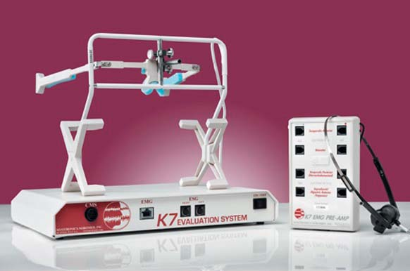
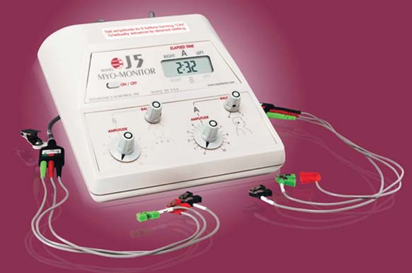

Діагностика · журнал «ДентАрт» 2017 №1
Нейром'язова фізіологічна концепція у стоматології
NEUROMUSCULAR PHYSIOLOGICAL APPROACH IN DENTISTRY
Діагностика та лікування пацієнтів зі складними проблемами часто є важким завданням для стоматолога. Патологія прикусу, дисфункції СНЩС, обструктивне апное сну, оклюзійні проблеми, краніомандибулярний розлад — ось лише неповний список подібних діагнозів.
У літературі є велика кількість доказів, які свідчать про те, що виникнення клінічних ситуацій, пов'язаних з тріщинами та відломами природних зубів і штучних коронок, підвищена чутливість зубів, проблеми скронево-нижньощелепних суглобів у більшості випадків зумовлені неправильним оклюзійним співвідношенням зубних рядів.1 А наш з вами пацієнт хоче отримати реставрацію не лише естетично красиву, але й довговічну, та ще таку, яка не викличе проблем зі здоров'ям ні відразу після втручання, ні в процесі довготривалої експлуатації.
Оклюзія — визначальний фактор стабільного положення краніо-мандибулярної системи, що включає зуби, жувальні м'язи і скронево-нижньощелепний суглоб. Оклюзійний дисбаланс — причина дестабілізації системи і основна умова розвитку дисфункції скронево-нижньощелепних суглобів. У багатьох наукових працях подаються докази залежності між оклюзією та захворюваннями скронево-нижньощелепних суглобів. Згідно з такими дослідженнями, проведеними в різних країнах світу, оклюзія є провокуючим, стимулюючим та/або рецидивуючим фактором етіології дисфункції скронево-нижньощелепних суглобів,12-25 а біль — головним симптомом дисфункції.26-33 Позбавлення від болю — це головна потреба, через яку пацієнти звертаються за професійною допомогою.34-35
Тому створення оптимальної фізіологічної оклюзії — один з основних факторів успішної естетичної реконструкції зубних рядів. Об'єктивна оцінка фізіологічного стану зубощелепної системи — необхідний елемент при діагностиці оклюзійних порушень та/або створенні терапевтичної оклюзії. Але все ускладнюється тим, що немає жодної сучасної оклюзійної концепції, яка дала б нам на 100% ефективний метод для лікування складних випадків.
Насамперед стоматологи в усьому світі ніяк не можуть домовитися навіть про єдину назву. Якщо взяти дисфункції скронево-нижньощелепних суглобів, то можна зустріти дуже різну термінологію, починаючи від патології скронево-нижньощелепних суглобів і закінчуючи краніо-мандибулярною дисфункцією.
На сьогодні у світі існує безліч концепцій, які можна умовно розподілити на три великі групи відповідно до трьох елементів гнатологічної системи.
Суглоб
Теорія центрального співвідношення Пітера Доусона, теорія скелетного Славічека, теорія м'язово-стабільного положення Джеффрі Окесона, міжнародна ортогнатична біоестетична теорія, реставроване центральне співвідношення (Койс), функціональна теорія Ґелба.
Зуби
Центральна оклюзія, гнатологічна філософія.
Нейром'язова концепція
Класична НМ теорія (Дженкельсон), LVI НМ оклюзія (Дікерсон), BIAD фізіологічна оклюзія.
Термін «нейром'язова стоматологія» був уперше запропонований понад 40 років тому засновником цієї концепції, доктором Bernard Jankelson.
По-перше, нейром'язова стоматологія ґрунтується на загальномедичних принципах, де функція м'язів, центральної нервової системи, скронево-нижньощелепних суглобів, зубів розглядається в єдиній фізіологічній функції.2-4
По-друге, нейром'язова стоматологія заснована на відновленні балансу жувальної мускулатури. Відновлений м'язовий баланс жувальних м'язів і м'язів шиї забезпечує оптимальне фізіологічне положення нижньої щелепи, яке сприяє нормалізації функції скронево-нижньощелепних суглобів і лежить в основі формування правильного прикусу.1
По-третє, нейром'язова стоматологія дозволяє виміряти і об'єктивно оцінити реакцію м'язів на певні оклюзійні втручання, що дає нам можливість планомірно впливати на результати лікування.
Найліпше про це в інтерв'ю газеті Dentistry Today висловилися фахівці з нейром'язової стоматології д-ри Dickerson та Malin. Доктор Dickerson: «Науковою основою цього напряму став досить простий і доступний для розуміння постулат: якщо повністю розслабити щелепно-лицьові м'язи, то вдасться знайти ідеальне положення нижньої щелепи, після чого в цю позицію можна тим чи іншим способом встановити прикус. Завдяки зусиллям Dr. Jankelson і його послідовників тепер у розпорядженні фахівців є можливість точного визначення цього положення. Стало можливим визначити, коли м'язи перебувають у найкомфортнішому положенні. Після цього залишається змістити зуби в ідеальну позицію ортодонтичними методами, і/або виконати реставрації, або провести складніше лікування таким чином, щоб щелепа в цілому зайняла оптимальне положення. Однією з фундаментальних переваг нейром'язової стоматології є те, що таким чином вдається позбутися парафункції (зокрема, бруксизму), що надзвичайно важливо для успіху такої популярної нині імплантації».47
Нейром'язова концепція дозволяє вирішити цю проблему, причому на науковій основі, з використанням інструментальних засобів — інакше кажучи, робить це об'єктивно, а не на рівні суб'єктивних вражень лікаря і пацієнта.
Dr. Malin: «Використовуючи принципи нейром'язової стоматології, ми можемо створити ідеальне оклюзійне співвідношення між верхньою та нижньою щелепами, при якому м'язи перебувають у стані фізіологічного спокою. Наявний у розпорядженні фахівців інструментарій дозволяє робити вимірювання максимально точно. Це дає можливість визначити оптимальне оклюзійне співвідношення до початку втручання, яким би методом воно не виконувалося. Особливо це важливо в обширних імплантологічних випадках, коли для отримання передбачуваного результату потрібна «оклюзійна ціль» та діагностичний протокол, який дозволить створити оптимальне співвідношення. У цьому велика перевага нейром'язової стоматології — точність там, де інакше довелося б покладатися на суб'єктивні рішення. Тепер є можливість вимірювати специфічні фізіологічні зміни у процесі оптимізації оклюзійного співвідношення пацієнта».11
Враховуючи те, що в Україні в останні роки протезування на імплантатах і тотальні естетичні керамічні реставрації перестали бути долею обраних, а стали справді широко вживаними методами реабілітації, можливість створення оптимальних схем лікування важко переоцінити.
І сьогодні ми, стоматологи, озброївшись найсучаснішим діагностичним комп'ютерним обладнанням і розуміючи принципи нейром'язової стоматології, можемо не лише вирішувати проблеми, пов'язані з зубами і прикусом, але й поліпшити загальний стан організму, діагностуючи і провадячи лікування станів, пов'язаних з іннервацією трійчастим нервом. На жаль, у своїй повсякденній діяльності ми найменше звертаємо увагу на діагностику стану м'язів.5 Тим часом, згідно з дослідженнями, від 80% до 90% всіх дисфункцій скронево-нижньощелепних суглобів пов'язані з проблемами м'язів.6,7 Стан м'язів неможливо об'єктивно оцінити на рентгенографічному знімку, так само як і при клінічному обстеженні. Методи біоінструментального аналізу стану м'язів, що використовуються нейром'язовою стоматологією, дозволяють зробити об'єктивний аналіз їх функцій, оцінити реакцію м'язів на проведене лікування і побачити, наскільки воно ефективне.8 Експерти вважають, що полегшення симптомів — це доказ ефективності лікування дисфункції скронево-нижньощелепного суглоба. Проведене докторами B. Cooper і I. Klenberg36 дослідження довело, що позитивного результату в полегшенні симптомів дисфункції скронево-нижньощелепних суглобів було досягнуто методом зміни фізіологічного стану від менш до більш зручного для жувальних м'язів, а також було доведено зменшення або зникнення скронево-нижньощелепних симптомів, особливо пов'язаних з больовими відчуттями, зокрема головними болями.37
Починаючи з шістдесятих років минулого століття, компанія Міотронікс (Myotronics-Normomed, Inc., Kent, Washington, USA) розробила і значною мірою вдосконалила спеціальне обладнання, що дозволяє об'єктивно визначити положення нижньої щелепи, яке лежить в основі нейром'язової оклюзії пацієнта, тобто визначити індивідуально для кожного пацієнта зону оклюзійного комфорту та оптимальне положення нижньої щелепи, що відповідає завданням лікування.
Основні діагностичні тести, які використовуються у нейром'язовій стоматології, включають: комп'ютеризоване сканування рухів нижньої щелепи (К7 СМЅ), електроміографію (К7 EMG), сонографію (К7 ESG), ультранизькочастотну електронейростимуляцію (J5 Міомонітор).
Комп'ютеризоване сканування рухів нижньої щелепи (К7 СМЅ) (фото 1) дозволяє аналізувати рух нижньої щелепи і визначати її положення в просторі, що дає об'єктивну характеристику зубощелепній системі, яку неможливо отримати традиційними методами діагностики.9

Фото 1. Діагностична система К7 (Міотронікс).
Електроміографія (EMG) дозволяє виміряти біопотенціал м'язів як у спокої, так і під час функції, що дає цінну діагностичну інформацію для оцінки положення нижньої щелепи і стану жувальної мускулатури. Використання поверхневих електросенсорів, які прикріплюються на шкіру в місці проекції певних м'язів, дає можливість визначити ступінь гіпертонусу (спазму) цих м'язів. Висновки значної кількості наукових праць, опублікованих у фахових журналах протягом останніх десятиріч, свідчать про те, що у пацієнтів із дисфункцією СНЩС спостерігається підвищена электроміографічна м'язова активність у стані спокою і слабка або асиметрична функціональна електроміографічна активність під час функції.38-41
Електросонографія (ESG) вимірює шуми і тони високої і низької частоти, які виникають при роботі СНЩС. Клацання, крепітація, шуми різного характеру під час відкривання і закривання рота можуть бути зареєстровані та проаналізовані за допомогою цього методу. Аналіз сонографії дає об'єктивне уявлення про характер патології суглоба.
Ультранизькочастотна електронейростимуляція (TENS) (фото 2) — спеціальний пристрій, що застосовується у нейром'язовій стоматології для розслаблення м'язів голови і шиї. Прилад ультранизькочастотної нейростимуляції (TENS) діє на основі вироблення переривчастого негативного прямокутного електричного сигналу, який стимулює одночасно всі жувальні і шийні м'язи нижньощелепного відділу трійчастого, лицьового й додаткового нервів.42,43

Фото 2. Міомонітор для електронейростимуляції.
Черезшкірна електронейростимуляція — це метод, коли електричний імпульс подається на поверхню шкіри за допомогою накладання поверхневих електродів з метою забезпечення розслаблення м'язів, відновлення м'язового балансу, збільшення циркуляції крові, збільшення амплітуди руху нижньої щелепи, а також зниження больової чутливості.44,45 У результаті цієї процедури відновлені м'язи рухають нижню щелепу на фізіологічну траєкторію руху в положення справжнього фізіологічного спокою, яке є точкою відліку в процесі реєстрації оптимальної оклюзії.
В основі запропонованої нейром'язової концепції лежить розслаблення м'язів, яке має бути обов'язковим елементом при проведенні діагностики і лікуванні оклюзійної дисгармонії.46
Замість того, щоб приблизно та суб'єктивно визначати позицію нижньої щелепи і траєкторію її руху, тепер ми можемо, використовуючи нейром'язову технологію, об'єктивно, з точністю до мікрона визначати правильне положення нижньої щелепи у просторі черепа та оптимальну траєкторію її руху. У наукових дослідженнях докторів Harold, Bowbeer, Beistle, Witzig, Spahl простежується один і той самий висновок про те, що «стабільний результат стоматологічного лікування залежить від створення збалансованої функції м'язів голови і шиї, що забезпечує оптимальне положення кісткових структур».10
В основу сучасних досліджень лягає фізіологія і загальний стан організму, а їх результати знаходять застосування і в інших розділах медицини. Тому одним із завдань сучасної стоматології стає розвиток міждисциплінарних зв'язків з неврологами, остеопатами, ортогнатичними хірургами та іншими фахівцями, які мають досягти взаєморозуміння зі стоматологами при лікуванні дизоклюзій та організму в цілому.
Завдяки своєму успіху нейром'язова стоматологія і технологія «Міотронікс» за останні кілька десятиліть отримали широке міжнародне визнання як один з найоб'єктивніших методів діагностики та лікування оклюзійних проблем. Методи нейром'язової стоматології прості у клінічному застосуванні, однак вимагають практичного засвоєння і розуміння загальних нейрофізіологічних концепцій зубощелепної системи.
Що це означає для нас? Це означає, що час, коли стоматологи користувалися здогадами і припущеннями в діагностиці та малоефективними методами приблизного лікування, відходить у минуле. Стоматологія вступила у ХХІ століття — століття доказової медицини — з технологією, яка насправді відповідає своєму часові. Ім'я цієї технології — нейром'язова стоматологія.
Нейром'язовий підхід додає до класичної теорії оклюзії відсутню ланку і дозволяє на практиці враховувати нейрофізіологію зубощелепної системи. Сучасна технологія дає клініцистам можливість вимірювати активність жувальної мускулатури, знаходити оптимальну оклюзію і траєкторію руху нижньої щелепи, що забезпечує гарний результат реставраційного лікування і довготерміновий позитивний прогноз. Методи нейром'язової стоматології незамінні при лікуванні пацієнтів із дисфункцією СНЩС.
У подальших статтях ми детально ознайомимо читачів журналу «ДентАрт» з діагностичними інструментами і практичним застосуванням нейром'язової концепції у різних галузях стоматології.
Література
- Jankelson R. A conversation with Dr.Rodert Jankelson, Dental Practice Report, 2000.
- Wile DR. Muscle, Studies in Biology. 2nd ed. London: A Edward Ltd; 1979.
- MacGregor RJ. Neural and Brain Modeling. San Diego: Academic Press Inc; 1987.
- Guyton AC. Human Physiology and Mechanisms of Disease. 3rd ed. Philadelphia: WB Saunders Co;1982.
- Garry, JF. White Memorial Hospital two-hour lecture on TMD, Los Angeles, Calif, communication between Dr. Janet Travel and Dr. James Garry, spring 1979.
- Grummons, D. Orthodontics for the TMJ-TMJ patient, second printing. Scottsdale, AZ: Wright & Co.; 1997:14-16.
- Chan, CA. Common myths of neuromuscular dentistry and the five basic principals of neuromuscular occlusion. Sept./Oct. Vol.2, Number 5. LV1 Dental Vision; 2002:10-11.
- Cooper, B. The role of bioelectrical instrumentation in the documentation and management of temporomandibular disorders. Oral Surg Oral Med Oral Endod 1997; 83:91-100.
- Myotronics-Noromed, Inc., J4 Myomonitor and K6-I/K7 Kinesiograph, Tukwila, Washington.
- Chan,C.A. Applying the neuromuscular principles in TMD and Orthodontics. J of the American Orthodontic Society, 2004
- Interview Dr. Jankelson, Dr. Malin for “Dentisrty today” 2008 Aug 01.
- Kirveskari P, Alanen P, Jamsa T: Association between cranio mandibular disorders and occlusal interferences. J Prosthet Dent 1989; 62(1):66-69.
- Kirveskari P, LeBell Y, Salonen M, Forssell H, Grans L: Effect of elimination of occlusal interferences on signs and symptoms of craniomandibular disorder in young adults. J Oral Rehabil 1989; 16(1):21-26.
- Fushima K, Akimoto S, Takamot K, Kamei T, Sato S, Suzuki Y: Incidence of temporomandibular joint disorders in patients with malocclusion. Nihon Ago KansetsuGakkaiZasshi 1989; 1(1):40-50.
- Raustia AM, Pirttiniemi PM, Pyhtinen J: Correlation of occlusal factors and condyle position asymmetry with signs and symptoms of temporomandibular disorders in young adults. J CraniomandibPract 1995; 13(3):152-156.
- Raustia AM, Pyhtinen J, Tervonen O: Clinical and MRI findings of the temporomandibular joint in relation to occlusion in young adults. J CraniomandibPract 1995; 13(2):99-104.
- Liu JK, Tsai MY: Association of functional malocclusion with temporomandibular disorders in orthodontic patients prior to treatment. FunctOrthod 1998; 15(3):17-20.
- Kirveskari P, Jämsä T, Alanen P: Occlusal adjustment and the incidence of demand for temporomandibular disorder treatment. J Prosthet Dent 1998; 79(4):433-438.
- Mao Y, Duan XH: Attitude of Chinese orthodontists towards the relationship between orthodontic treatment and temporomandibular disorders. Int Dent J 2001; 51(4):277-281.
- Sonnesen L, Bakke M, Solow B: Malocclusion traits and symptoms and signs of temporomandibular disorders in children with severe malocclusion. Eur J Orthod 1998; 20(5):543-559.
- Çeliş R, Kraljevic K, Kraljevic S, Badel T, Panduric J: The correlation between temporomandibular disorders and morphological occlusion. ActaStomatologicaCroatica. 2000; 34(1).
- Kirveskari P, Alanen P, Jamsa T: Association between cranio mandibular disorders and occlusal interferences in children. J Prosthet Dent 1992; 67(5):692-696.
- Fushima K, Inui M, Sato S: Dental asymmetry in temporomandibular disorders. J Oral Rehabil 1999; 26(9):752-756.
- Kloprogge MJ, van Griethuysen AM: Disturbances in the contraction and coordination pattern of the masticatory muscles due to dental restorations. An electromyographic study. J Oral Rehabil 1976 3(3):207-216.
- Beitollahi JM, Mansourian A, Bozorgi Y, Farrokhnia T, Manavi A: Evaluating the most common etiologic factors in patients with temporomandibular disorders: A case control study. J Applied Sciences 2008; 8(24):4702-4705.
- Upton JA, Ship JA, Larach-Robinson D: Estimated prevalence and distribution of reported orofacial pain in the United States. J Am Dent. Assoc 1993; 124:115-121.
- Nassif N, Al-Selleeh, F, Al-Admawi M: The prevalence and treatment needs of symptoms and signs of temporomandibular disorders among young adult males. J Oral Rehabil 2003; 30:944-950.
- Nassit, N, Talic, Y: Classic symptoms in temporomandibular disorder patients: a comparative study, J CraniomandibPract 2001; 19(1):33-41.
- Matsumoto M, Matsumoto Al, Bolognese A: A study of signs and symptoms of temporomandibular dysfunction in individuals with normal occlusion and malocclusion. J CraniomandibPract 2002; 20:274-281.
- Kamisaka M. Yatani H, Kubok T, Matsuka Y. Minakuchi H: Four year longitudinal course of TMD symptoms in an adult population and the estimation of risk factors in relation to symptoms. J Orofac Pain 2000; 14:224-232.
- Pedroni C, DeOliveria A, GuaratiniM: Prevalence study of signs and symptoms of temporomandibular disorders in university students, J Oral Rehabil 2003; 30:283-289.
- Carlsson G, Egemark I, Magnusson T: Prediction of signs and symptoms of temporomandibular disorders: a 20 year follow-up study from childhood to adulthood. ActaOdontolScand 2002; 60:180-185.
- Magnusson T, Egemark I, Carlsson G: A longitudinal epidemiologic study of signs and symptoms of temporomandibular disorders from 15-35 years of age. J Orofac Pain 2000; 14:310-319.
- Cooper B, Kleinberg I: Examination of a large patient population for presence of symptoms and signs of temporomandibular disorders. J CraniomandibPract 2007; 25(2):114-126.
- Gremillion HA: The prevalence and etiology of temporomandibular disorders and orofacial pain. Tex Dent J 2000; 117:30.
- Cooper B., Klenberg I.: Создание физиологического положения височно-нижнечелюстного сустава с использованием нейромышечного лечения с помощью ортотика. Dental Market, 2010, 4:90-99
- Jankelson B: Neuromuscular aspects of occlusion: effects of occlusal position on the physiology and dysfunction on the mandibular musculature. Dent Clin North Am 1979; 23:157-168.
- Mao Y, Duan XH: Attitude of Chinese orthodontists towards the relationship between orthodontic treatment and temporomandibular disorders. Int Dent J 2001; 51(4):277-281.
- Çeliş R, Kraljevic K, Kraljevic S, Badel T, Panduric J: The correlation between temporomandibular disorders and morphological occlusion. ActaStomatologicaCroatica. 2000; 34(1).
- Kirveskari P, Alanen P, Jamsa T: Association between cranio mandibular disorders and occlusal interferences in children. J Prosthet Dent 1992; 67(5):692-696.
- Kloprogge MJ, van Griethuysen AM: Disturbances in the contraction and coordination pattern of the masticatory muscles due to dental restorations. An electromyographic study. J Oral Rehabil 1976 3(3):207-216.
- Jankelson B: Physiology of human dental occlusion. J Am Dent Assoc 1955; 50:664-680.
- Jankelson B: Neuromuscular aspects of occlusion: effects of occlusal position on the physiology and dysfunction on the mandibular musculature. Dent Clin North Am 1979; 23:157-168.
- LVI Global Core 1 Instructional Manual: Advanced Functional Dentistry. The Power of Physiologic based Occlusion.
- Vesanen, E., et.al. The Jankleson Myomonitor and its Clinical Use. Proc. Finn. Dent Soc. // 69:244-247,1973.
- Yoshimoto, S., et.al. Antistress effects of transcutaneous electrical nerve stimulation (TENS) on colonic motility in rats. Digestive Diseases and Sciences 57(5):1213-1221, 2012.
- Roman P. Occlusion Confusion. J. Den Town. 2010 Feb.